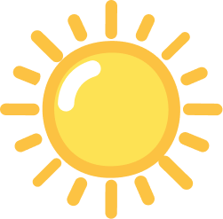

UV-Index: Der UV-Index zeigt an, wie stark die ultraviolette Strahlung der Sonne auf der Erde ankommt. Je höher der Wert, desto intensiver die Strahlung und desto mehr Wasser benötigen die Pflanzen.
Pflanzenpflege: Ob drinnen oder draußen, jede Pflanze hat andere Bedürfnisse. Auch die Topfgröße beeinflusst Wachstum und Gesundheit – grössere Töpfe bieten mehr Wurzelraum und Stabilität.

Wasserbedarf: Wasser ist essenziell für das Wachstum. Zu wenig führt zu Stress, zu viel kann Wurzeln schädigen. Die richtige Menge sorgt dafür, dass Pflanzen gesund und kräftig bleiben.
choose your plant